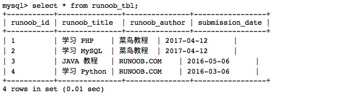
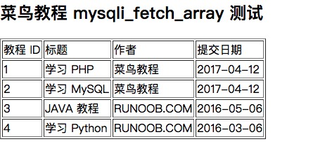
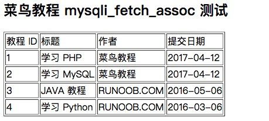

MySQL Query Data
MySQL Database UsageSELECTstatement to query data.
You can usemysql>query data in the database from the command prompt window, or query data through PHP scripts.
Syntax
The following is the general SELECT syntax for querying data in the MySQL database:
SELECT column1, column2, ... FROM table_name [WHERE condition] [ORDER BY column_name [ASC | DESC]] [LIMIT number];
Parameter description:
column1,column2, ... are the names of the columns you want to select. If you use*means selecting all columns.table_nameis the name of the table from which you want to query data.WHERE conditionis an optional clause used to specify filter conditions, returning only rows that meet the conditions.ORDER BY column_name [ASC | DESC]is an optional clause used to specify the sort order of the result set; the default is ascending (ASC).LIMIT numberis an optional clause used to limit the number of rows returned.
Simple application examples of the MySQL SELECT statement:
Example
SELECT * FROM users;
-- Select all rows of specific columns
SELECT username, email FROM users;
-- Add a WHERE clause to select rows that meet the condition
SELECT * FROM users WHERE is_active = TRUE;
-- Add an ORDER BY clause to sort by a column in ascending order
SELECT * FROM users ORDER BY birthdate;
-- Add an ORDER BY clause to sort by a column in descending order
SELECT * FROM users ORDER BY birthdate DESC;
-- Add a LIMIT clause to limit the number of rows returned
SELECT * FROM users LIMIT 10;
The SELECT statement can be flexible; we can combine and use these clauses according to actual needs, for example using WHERE and ORDER BY clauses together, or using LIMIT to control the number of rows returned.
在 WHEREIn the clause, you can use various conditional operators (such as=, <, >, <=, >=, !=), logical operators (such asAND, OR, NOT), and wildcards (such as%), etc.
The following are some advanced SELECT statement examples:
Example
SELECT * FROM users WHERE username LIKE 'j%' AND is_active = TRUE;
-- Use OR operator
SELECT * FROM users WHERE is_active = TRUE OR birthdate < '1990-01-01';
-- Use IN clause
SELECT * FROM users WHERE birthdate IN ('1990-01-01', '1992-03-15', '1993-05-03');
Fetch Data via Command Prompt
In the following example, we will use the SQL SELECT command to fetch data from the MySQL data table runoob_tbl:
Example
The following example will return all records from the data table runoob_tbl:
Read data table:
Output result:

Fetch Data Using PHP Scripts
Use the PHP function'smysqli_query() 及 SQL SELECTcommand to fetch data.
This function is used to execute SQL commands, and then through the PHP functionmysqli_fetch_array() to use or output all queried data.
mysqli_fetch_array() The function fetches a row from the result set as an associative array, a numeric array, or both. Returns an array generated from the row fetched from the result set, or false if there are no more rows.
The following example reads all records from the data table runoob_tbl.
Example
Try the following example to display all records of the data table runoob_tbl.
Fetch data using the mysqli_fetch_array MYSQLI_ASSOC parameter:
The output result is as follows:

In the above example, each read record row is assigned to the variable $row, and then each value is printed.
Note:Remember that if you need to use variables in a string, place the variables in curly braces.
In the above example, the second parameter of the PHP mysqli_fetch_array() function isMYSQLI_ASSOC, setting this parameter causes the query result to return an associative array, and you can use field names as array indexes.
PHP provides another functionmysqli_fetch_assoc(), which fetches a row from the result set as an associative array. Returns an associative array generated from the row fetched from the result set, or false if there are no more rows.
Example
Try the following example, which uses themysqli_fetch_assoc()function to output all records of the data table runoob_tbl:
Fetch data using mysqli_fetch_assoc:
The output result is as follows:

You can also use the constant MYSQLI_NUM as the second parameter of the PHP mysqli_fetch_array() function to return a numeric array.
Example
The following example uses the MYSQLI_NUM parameter to display all records of the data table runoob_tbl:
Fetch data using the mysqli_fetch_array MYSQLI_NUM parameter:
The output result is as follows:
The output results of the above three examples are all the same.
Memory Release
After we execute the SELECT statement, it is a good habit to release the cursor memory.
Memory release can be achieved by using the PHP function mysqli_free_result().
The following example demonstrates how to use this function.
Example
Try the following example:
Release memory using mysqli_free_result:
The output result is as follows:
zhaojjiang
127***1900@qq.com
Implementing pagination:
zhaojjiang
127***1900@qq.com
Little Sun
cho***anyang@asfenqi.com
Reference address
Some examples of MySQL limit applications.
Syntax format:
Analysis:The LIMIT clause can be used to force a SELECT statement to return a specified number of records. LIMIT accepts one or two numeric arguments. The arguments must be integer constants. If two arguments are given, the first argument specifies the offset of the first returned record row, and the second argument specifies the maximum number of returned record rows. The offset of the initial record row is 0 (not 1): For compatibility with PostgreSQL, MySQL also supports the syntax: LIMIT # OFFSET #.
Performance Analysis of MySQL Pagination Query Statements
Compared with MSSQL's TOP syntax, MySQL's LIMIT syntax appears much more elegant. Using it for pagination is the most natural thing.
2.1 The most basic pagination method:
In the case of small to medium data volumes, such SQL is sufficient. The only thing to pay attention to is ensuring that indexes are used.
For example, if the actual SQL is similar to the statement below, then it is better to create a composite index on the category_id and id columns.
2.2 Subquery pagination method
As the amount of data increases, the number of pages will increase, and the SQL for viewing the later pages may be similar to:
In a word, the further back the pagination, the larger the offset of the LIMIT statement, and the speed will obviously become slower.
At this point, we can use subqueries to improve pagination efficiency, roughly as follows:
2.3 JOIN pagination method
According to my tests, the efficiency of join pagination and subquery pagination is basically at the same level, and the time consumed is also basically the same.
Explain SQL statement:
Why is that?Because subqueries are completed on the index, while ordinary queries are completed on data files. Generally speaking, index files are much smaller than data files, so operations are more efficient.
In practice, you can use a strategy-pattern-like approach to handle pagination. For example, if it is within 100 pages, use the most basic pagination method; if it is more than 100 pages, use the subquery pagination method.
Little Sun
cho***anyang@asfenqi.com
Reference address
Wu Guangdong
128***9441@qq.com
MySQL simple query statements can be applied by using different query statements.
/*websites 表名 NAME alexa url country 字段*/ SELECT * FROM websites; /* 查询表所有数据 */ SELECT NAME FROM websites; /* 查询表字段数据 */ SELECT * FROM websites where name = "广西"; /* 查询表字段下条件数据 */ SELECT * from websites where name like "_o%"; /* 模糊查询表下数据 */ SELECT * FROM websites where id BETWEEN "1" AND "5"; /* 查询表下字段范围数据 */ SELECT * FROM websites WHERE name in ("广西","百度"); /* 查询表字段下固定条件数据 */ SELECT DISTINCT country FROM Websites; /* 查询去重值 */ SELECT * FROM Websites WHERE country = "CN" AND alexa > 50; /*查询表下范围条件数据*/ SELECT * FROM Websites WHERE country = "USA" OR country="sh"; /* 查询表下条件不同值 */ SELECT * FROM Websites ORDER BY alexa; /* 查询表下值排序结果 */ SELECT * FROM Websites ORDER BY alexa DESC; /* 查询表下排序结果降序 */ SELECT * FROM Websites LIMIT 2; /* 查询表下范围数据 */ SELECT name as zzz from websites; /*别名查询表下数据*/Wu Guangdong
128***9441@qq.com
Narule
jun***r33@sina.com
SQL statement join queries
Left join:left join ... on ...
Right join:right join... on ...
Format:
Query all order information of a user:
Slightly more complex - count the number of orders per user (requires grouping by user id)
Here it shows that the user named Wang Wu (id=3) has 2 orders, and Zhang San (id=5) has 1 order
This is a right join query. Using a right join makes sense because left join and right join are different queries. The difference: in left join on, the left table is the main table; in right join on, the right table is the main table.
This order statistics query has a problem: the user table has new user information, but this user has no order information
Please see the following query:
Obviously, incorrectly choosing left here will cause unnecessary data to be retrieved, which can be called garbage information. Because the goal is to query order information (carrying user information), users without orders do not need to be queried.
Narule
jun***r33@sina.com
Narule
jun***r33@sina.com
Reference address
Multi-level join queries and the use of aggregate functions
Try more when you have nothing to do. At worst, you'll get an error. It won't damage the database (at most it's a test environment database - are you really learning SQL in a production environment?)
Multi-level joins are no different from two-table join queries. Just try it boldly and you'll know, just add it at the endleft jion on
Complex SQL
Requirement: Calculate the price of each order for users
(Note: each order here may have several order items. For example, an order contains books and shoes. The order price is the price of books + the price of shoes)
The first query uses the sum() function to calculate prices, which is used for cumulative summation and belongs to aggregate functions
Other data aggregate functions include avg() for average, max() for maximum, min() for minimum, and count() for counting the number of data records.
Narule
jun***r33@sina.com
Reference address
Roaming
248***4514@qq.com
Database queries can also choose which part of the data to query.
SQL statement:
Query 5 records in reverse order from the student table in the database:
Roaming
248***4514@qq.com
Matcha
173***2517@qq.com
MySQL pagination query
It is actually very simple for the backend to write MySQL statements to handle the frontend's pagination query requests; just use limit.
Example:
100 refers to the offset, 200 refers to the number of records to query.
Therefore, the backend code needs to receive two parameters: offset and rows (number of records to query).
The parameters that the frontend passes to the backend can be page_num (which page) and page_size (how many records to display per page). After receiving page_num and page_size, the backend can convert the offset using the expression (page_num - 1) * page_size, and the number of records to query (rows) is page_size.
The entire backend code:
def paging(page_count, page_size): table_name = 'Test' offset = (page_count - 1) * page_size sql = 'select * from %s limit %d, %d'%(table_name, offset, page_size) print(sql) conn.execute(sql) conn.commit()Matcha
173***2517@qq.com